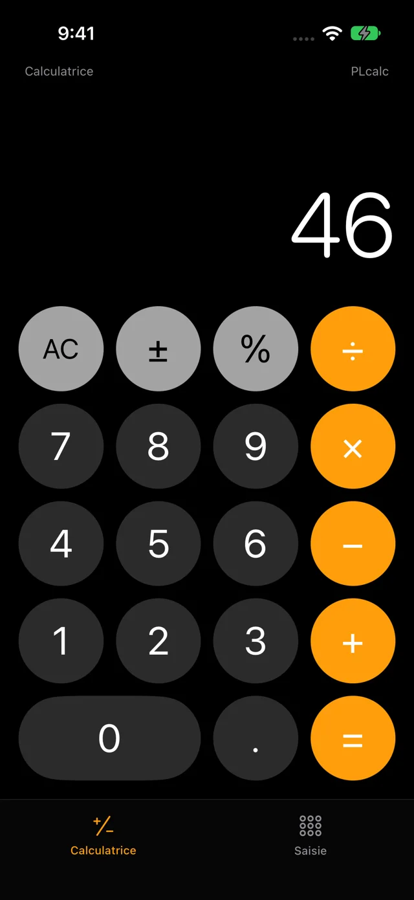
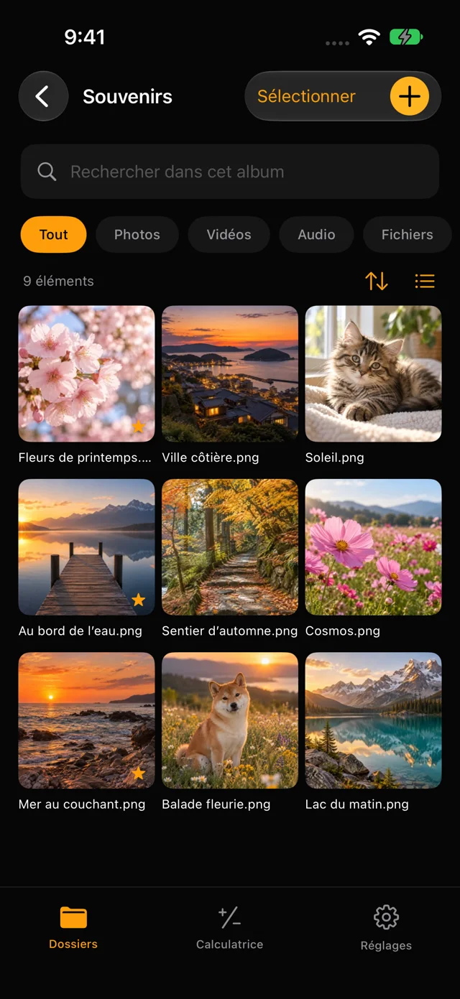
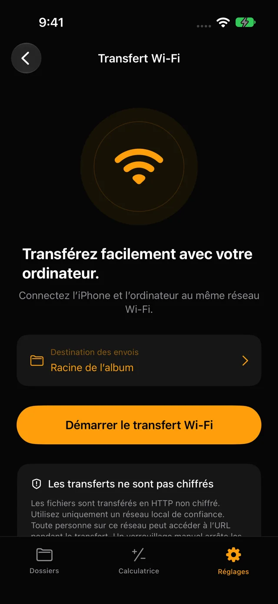

Chiffrement sur l’appareil
Les fichiers et les noms de dossiers sont chiffrés. Choisissez un code PIN à 4 chiffres ou un mot de passe de 8 à 64 caractères.
iPhone & iPad · plcalc
Conservez photos, vidéos et fichiers chiffrés sur votre iPhone ou iPad. Ouvrez vos albums avec un code PIN ou un mot de passe. Aucun compte nécessaire.
Voir sur l’App StoreiOS 17+ · iPadOS 17+


PHOTO LOCK CALCULATOR
Les fichiers et les noms de dossiers sont chiffrés. Choisissez un code PIN à 4 chiffres ou un mot de passe de 8 à 64 caractères.
Organisez photos, vidéos, sons et documents dans des sous-dossiers. Recherchez, ajoutez des favoris et restaurez les éléments de la corbeille.
Connectez les appareils au même Wi-Fi et ouvrez l’adresse affichée dans l’app. Choisissez un dossier et importez vos fichiers depuis le navigateur.

01 / 02 / 03
Choisissez un code PIN ou un mot de passe et confirmez-le.
Ouvrez l’album dans l’onglet de saisie et ajoutez des fichiers avec +.
Utilisez l’onglet calculatrice pour vos calculs courants.
Un code PIN ou mot de passe oublié ne peut pas être récupéré. Sauvegardez vos fichiers importants séparément. La capacité dépend de l’espace libre.
Le transfert Wi-Fi utilise HTTP sans chiffrement. Utilisez un réseau de confiance : les appareils du même réseau local peuvent accéder à l’album pendant le partage. Le système peut interrompre les transferts en arrière-plan.
Assistance ↗